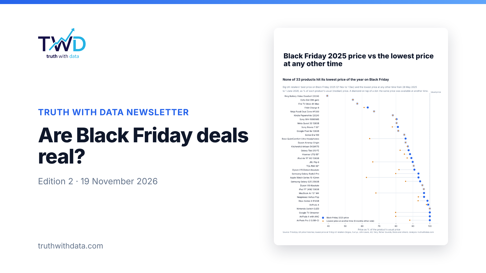

Title: Are Black Friday deals real? I tracked 33 products for a year
Cover image (download, then upload as the edition's cover): 
Body: select everything inside the dashed box below, copy, and paste into the LinkedIn editor under the title. Headings, bold and links carry over.
SEO title (Publishing menu → SEO): Are Black Friday deals real? 33 products tracked for a year
SEO description: None of 33 popular products hit its lowest price of the year on Black Friday 2025, but 29 were cheaper than usual. How to check a deal this year.
Text for the post that goes out with it (the box LinkedIn shows when you press Publish):
None of 33 popular products was at its lowest price of the year on Black Friday 2025.
But 29 of them were cheaper than usual, typically by 11%. Both "Black Friday is a con" and "Black Friday is the cheapest time to buy" are partly right, because they answer different questions.
Black Friday is next Friday, 27 November. This week's edition has the numbers and a one-minute check for any deal. The newsletter is now weekly, every Thursday.
From this week the newsletter comes out every Thursday morning: one question people argue about, answered with public data, with the method shown. Black Friday is next Friday, 27 November, so this week's question is an obvious one.
Every November two headlines run side by side. One says Black Friday deals are a con: the price was lower in the summer, or it was raised in October so it could be "cut". The other says it really is the cheapest time of year to buy. Both come from serious price trackers. Which one is right?
I took 33 products people actually search for in November: headphones, TVs, Kindles, Echo Dots, consoles, iPads, Dyson and Shark vacuums, air fryers and more. From PriceSpy UK's price histories I rebuilt each one's best price at 13 big UK retailers, including Argos, Currys, John Lewis, AO and Very, on every day from May 2025 to November 2026. The "usual price" is the median daily price over 12 months, not the "was" price on the label, which is often a price nobody charges.
Black Friday was never the cheapest day. None of the 33 products was at its lowest price of the year on Black Friday 2025. Every Black Friday price was matched or beaten within six months, and 22 of the 33 were beaten outright.
But the deals weren't fake. 29 of the 33 were below their usual price, with a median saving of 10.9%, or £35. Four had no discount at all: AirPods Pro 2, AirPods 4 with noise cancelling, the Switch OLED and the Google TV Streamer.
As a basket, Black Friday week was the cheapest time in 18 months. Between Black Friday and Cyber Monday, prices were on average 14% below usual, lower than at any other point we tracked. It just isn't the best day for each product on its own.
Most "deals" were a repeat. 30 of the 33 had been at the same price or lower in the six months before. The Echo Dot was £29.99 in October, back to £54.99 for five weeks, then £29.99 again for Black Friday. "Raised, then cut" happened, but for only 5 of the 33.
Ignore the "was" price and look at the price history instead. If the Black Friday price matches the lowest of the last six months, it's a good price but not a rare one. If it beats it, buy if you need it. Amazon's own devices have a sale price rather than a Black Friday price, and it comes back several times a year. And if you miss it, mid-December came within 3–4 percentage points of Cyber Monday last year.
This is 33 popular products, not everything on sale, and one Black Friday. Amazon's prices aren't included, because PriceSpy UK doesn't track Amazon.co.uk. The analysis counts price only, not bundles, gift cards or loyalty prices.
The article has the full table for all 33 products, with each one's usual price and last year's low. The free deal checker tells you whether a price is a real low for any product.
Read the analysis · Use the Black Friday deal checker
The code (Python and R) is public: github.com/truthwithdata/analysis
Want one chart a week in your inbox, every Sunday? Sign up at truthwithdata.com. It's free.
If you run a retail or pricing team and want to know how your promotions compare with the market, book a free 30-minute call.
Vishal